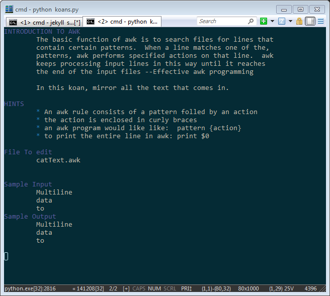

On Linux it's a pretty easy install, scroll down to the notes on getting this to run under windows if you are having issues getting it to run under windows.
# git clone https://github.com/analogpixel/awkKoans<br> # cd awkKoans<br> # ./koan.py<br>
One note, this is still under active development, and hopefully more and more koans will be added. So once you finish all of the koans, you should check back to see if any new ones have been added.
To start the program just run ./koan.py or python koan.py.

#./koan.py -l<br> 0 catText<br> 1 simplePatternMatch<br> 2 beginingOfLineMatch<br> 3 endOfLineMatch<br> ...<br>
Just edit the .awk file created by the program, and then use the -t option to test if your solution is correct.
#./koan.py -k 1 -o<br> #vi catText.awk<br> #./koan.py -k 1 -t<br>
This testing framework was actually written on a windows box. You just need a few things:
To get the ansi colors within python, I just used escape characters to set the colors
def clear(): return u'\033[0;0H\033[2J' def bold(msg): return u'\033[1m%s\033[0m' % msg def color(this_color, string): """ http://ascii-table.com/ansi-escape-sequences.php colors 30-37 """ return "\033[" + this_color + "m" + string + "\033[0m"
this doesn't work within cmd shell on windows, but it should work on just about any other system out there. I think if I upgrade the display system, the next version will just start a local webserver and host the data that way.
the main loop is just getting the current time on the file you should be editing and then watches to see if that file changes. I think there are actually a few editors that this won't work on, but for the most part if your editor isn't doing something too stupid, it should force the code to check when you save it.
while True: if getKoanTime() != currentMTime: currentMTime = getKoanTime() if testCommand(): nextKoan() print(currentText) else: print("booo") time.sleep(1)